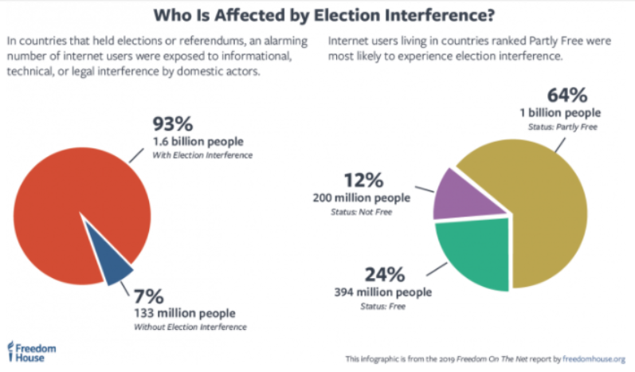
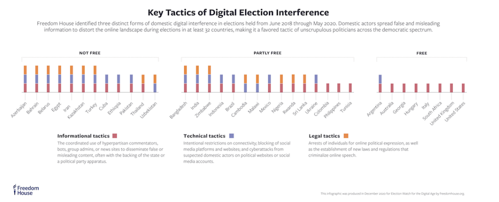

Foreign interference in democracy
By Jayden Aguirre
How Russian Trolls Spread Misinformation
Russians are trying to influence other countries like the United States through the internet using "trolls”. A troll is “a person who intentionally antagonizes others online by posting inflammatory, irrelevant, or offensive comments or other disruptive content. In the late 1980s, Internet users first adopted the word "troll" to denote someone who intentionally disrupts online communities. (Mattathias Schwartz, Wikipedia).
Trolls work in several ways:
1. Using fake people, websites, and automated stuff to flood the information space.
2. Paying people in other countries to spread misinformation and mislead you.
3. Creating drama; turning slight differences into important things and trying to start arguments.
4. Spreading hacking and weaponized information.
Why do trolls troll? Some do this for fun because they find joy in upsetting people, but most trolls do it for money. Some trolls work for a government or business, and others get money by ads on their websites. Trolls make a lot of money because people are easy to manipulate.
Dose Internet Trolling Affect Elections?
Most people think that election problems happen in in partly-free countries like India, Mexico, Nigeria, and Brazil. However, “informational” affects, where people don’t know how to vote, or why to vote for whom, happen all over, including in the United States.

This image came from https://freedomhouse.org/report/freedom-on-the-net/2019/the-crisis-of-social-media/digital-election-interference
These images show that free and partly free countries use informational tactics. The problem with that is some information is true and some is not. Most people tend to believe what they only want to hear and the people they want to hear are internet trolls that do not give factual information. People who support the trolls and like them are called bias people bias.
Who's Fault is it?
Google and Facebook say they are not responsible for the content on their websites, and that is currently true according to the laws. However, many troll-shared articles in 2016 were shared on Google and Facebook supporting Donald Trump against his opponent Hillary Clinton. One article that said Pope Frances had endorsed Donald trump was shared with over 100,000 users (about the seating capacity of the Los Angeles Memorial Coliseum).
There were also “vote online” memes that assured democrats in Pennsylvania that they could vote from home without an absentee ballot, which meant they did not vote. People like Facebook Newsela - In wake of 2016 election, Facebook and Google block false information CEO Mark Zuckerberg said the social media giant did not affect the election results, but we now know that it did. Articles say it is the youth believing Facebook and it's affecting the youth and the elections.